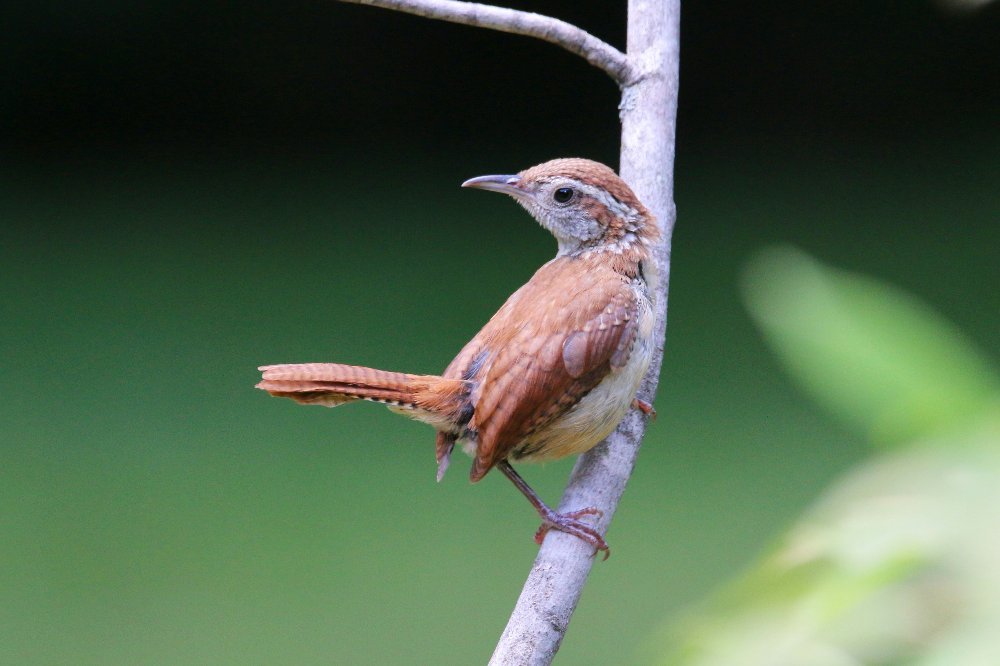

The Puff-Throated Babbler is a small, ground-dwelling bird found in forests, woodland, scrub, and other areas with dense undergrowth. It has warm brown upperparts, a paler underside, and a characteristic pale throat that can appear puffed out when the bird calls or displays. It spends much of its time searching through leaf litter for insects and other small creatures, often moving through vegetation in small groups. Although it can be difficult to spot because of its secretive habits, its lively calls often reveal its presence.